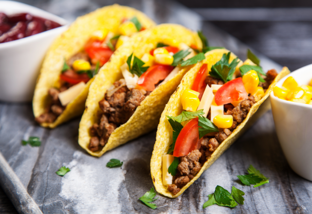

Comidas mexicanas famosas

Taco
É um prato típico do México, feito com uma tortilla de farinha de milho ou trigo, recheada e dobrada.

Guacamole
Abacate amassado com limão, cebola, tomate, coentro, pimenta e sal, típico da culinária mexicana.

Tortilha
Massa de milho tratado, achatada e cozida em chapa, base da culinária mexicana.